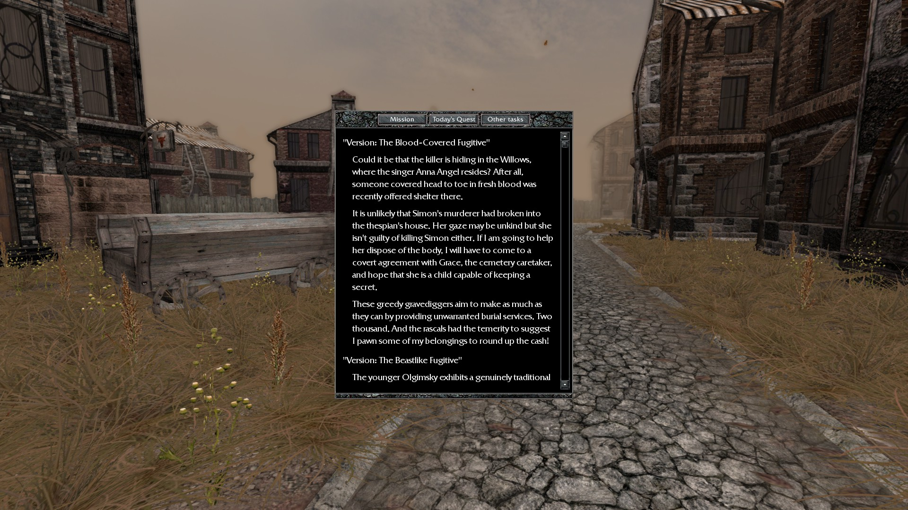
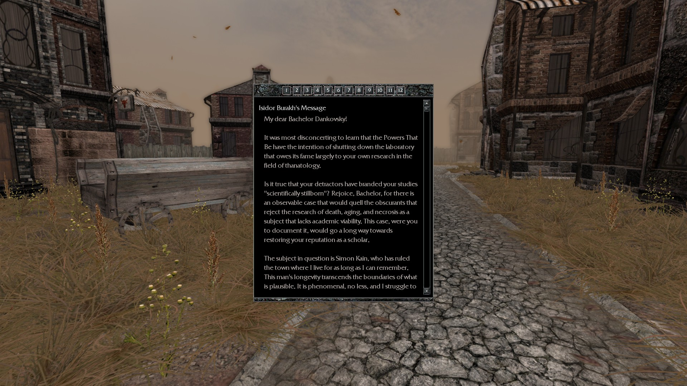
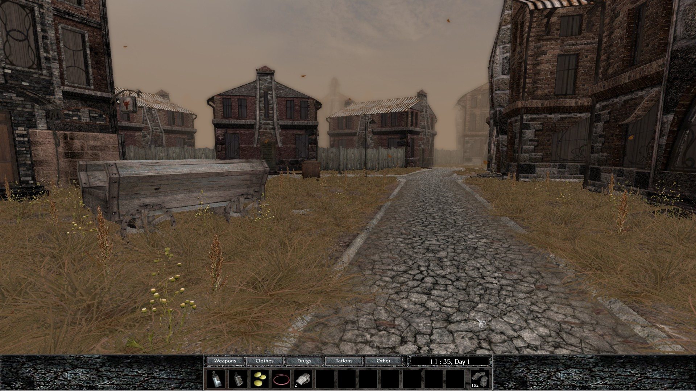
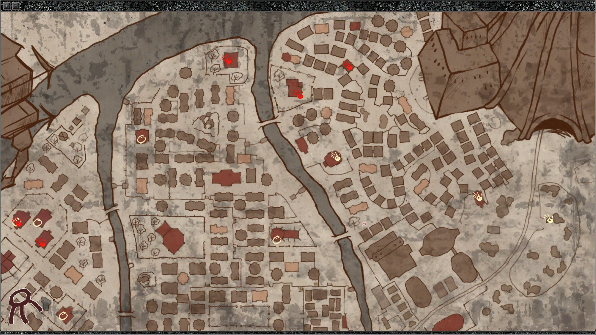
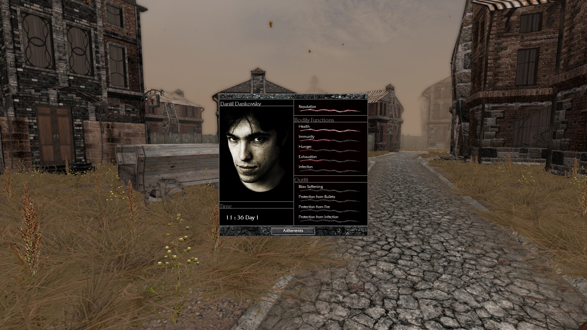
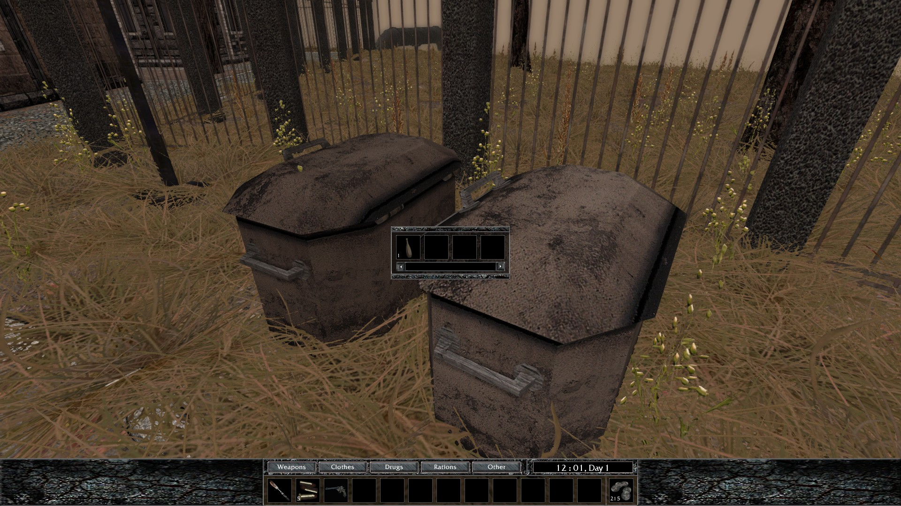
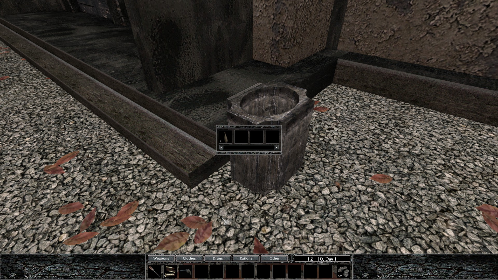

It's pretty much universally agreed upon that the best character to start with is the Bachelor! He's sort of like the tutorial route, where you get a lot of assistance throughout the game from the other characters. That's not to say you get your hand held or the game explains things to you like a little baby, but his route helps you get properly acquainted with the town and the people who live in it.
LEARN THE CONTROLS!
The game is in first-person, so you have the usual WASD to walk and mouse to look around controls as others of this type do. However, the game doesn't really let you know about the most important menus, which is troublesome!
Q opens up your quest menu, which is where you'll find everything you need to get done for the day as well as your overall objective in the game.

L opens the letters menu, which is VERY Important for alerting you to new quests. You'll receive letters throughout the day from people who want to see you, so make a habit of checking these periodically. There is a sound cue for new letters that sounds like a page turning.

I opens your inventory. If your inventory is full, items you pick up will fall to your feet in a bag. There is a sound cue for this as well.

M opens your map.

P opens your stats menu. It shows the current day and time as well as your health, immunity, reputation, hunger, exhaustion, and infection meters. There are also meters showing the effectiveness of your clothes.

CHOOSE YOUR WORDS CAREFULLY!
While you don't always have to be nice to people, you don't want to say the wrong thing to end a conversation or lose someone's trust. Your dialogue choices REALLY matter in this game!
ALWAYS CHECK THE TRASH CANS!
Trash cans are your premier source of "stuff" in this game. It's where you get pretty much everything you will end up trading with the townsfolk.


MAKE SURE YOU GET LOTS OF WATER!
And don't drink it either! Water is a form of currency in this game. You're gonna want to have a lot of it on hand at all times.
DON'T LEAVE YOUR WEAPON OUT IF YOU DON'T NEED IT!
Sorry to break it to ya, but most people aren't very comfortable around a guy walking down the street waving a rifle around. Stop causing a scene!
SAVESCUM OFTEN!
I dont care what your own personal hangups about savescumming might be! Save often to save yourself a bunch of headaches! This helps for if you make a mistake during dialogue and end up screwing yourself out of finishing a quest, or if you unexpectedly get killed by something. These things will happen A LOT and with no forewarning, so having recent saves on hand is crucial!
SAVE YOUR SHMOWDERS 'TIL THE END!
Just trust me on this one :^) You're gonna want to have a few of them gathered up by then!